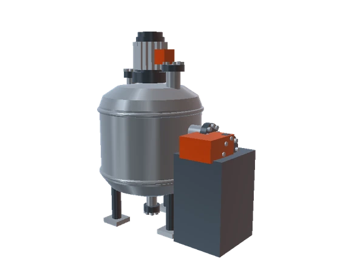

3D MODEL
EQUIPMENT VIEWER3D / 360°
Explore the modelDrag to rotate · illustrative only
Granulation, Milling & Sifting
Starch Paste Kettle
Kettle equipment for preparing starch paste and similar process mixtures.
Request a quote ↗Project specification
Capacity / dimensionsAs specified
Material of constructionAs agreed
Operating conditionsApplication-specific
Inspection / documentationAs agreed
Concept model for product identification only. It is not a manufacturing drawing or a verified representation of supplied equipment.
RELATED EQUIPMENT